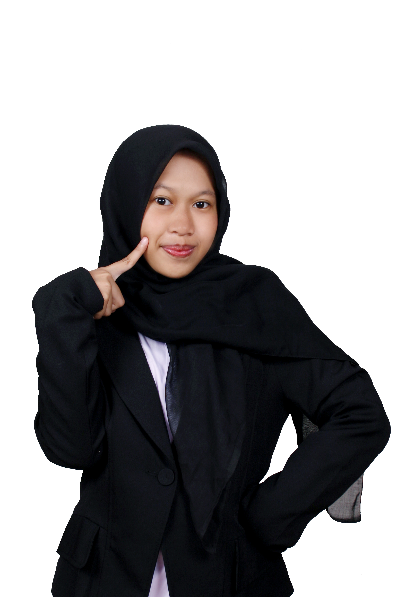

Tuti Purwaningsih
A student majoring in Artificial Intelligence Engineering who continuously seeks to gain experience and knowledge, with several experiences participating in events
Education Level
Institut Teknologi Sepuluh Nopember (Jul 2024 - Present)
Artificial Intelligence Engineering, 3.69/4.00
Work Experience
Bulan Bung Karno 2024 (PDI-P) (Jun 2024)
Dancer
- Joined a colossal dance performance with 3,000 people for Bung Karno Month 2024.
Organizational Experience
Sanggar Seni BintangS (Oct 2023 - Nov 2023)
Production team
- Responsible for providing and managing props for a theater performance with 40 performers.
Sanggar Seni Bintang (Jul 2022 - Aug 2022)
Ticketing Event
- Responsible for ticket booking, exchange, and verification for a team at the West Jakarta Student Theater Festival featuring the script
"Delapan Nada yang Hilang dari Kiara Chandra" with approximately 360 audience members.
Modern Dance (N2Republic) (Aug 2022 - Jul 2023)
Treasurer
- Record income and expenses indetail
- Transparently show the record to members
REEVA (Schematics 2024) Nov 24
Performance
- Performed in a musical drama title "The Royal Masterpiece" as Itin.
Schematics 2025 (Apr 2025 - Nov 2025)
Staff Sponsorship
- Identified and approached potential sponsors for the event.
- Negotiated sponsorship agreements and ensured mutual benefit.
- Maintained positive, ongoing relationships with sponsors to support future collaborations
Surabaya Model United Nations 2025 (May 2025 - Nov 2025)
Staff Sponsorship
- Identified and approached potential sponsors for the event.
- Negotiated sponsorship agreements and ensured mutual benefit.
- Maintained positive, ongoing relationships with sponsors to support future collaborations
Previous Project
- AI-driven Geothermal Prospect Mapping for Sumatra Island
- Game : HEMI
- Comparative Analysis of Genetic Algorithm, Particle Swarm Optimization,
and Grey Wolf Optimizer in Optimizing Sugeno Fuzzy Models for Octane Number Estimation
Comming soon WEB
Timer web for learning language
Dream Job
AI Music Producer